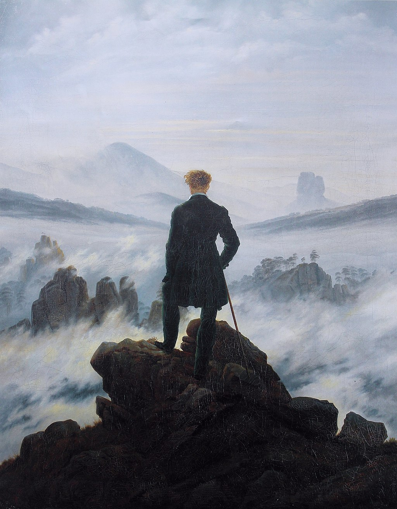

<head>
<meta charset="UTF-8" />
<meta name="keywords" content="drawing, painting" />
<meta name="description" content="drawings by Sunjy" />
<title>Sunjy</title>
<link rel="shortcut icon" type="image/x-icon" href="../../mImages/mCommon/favicon.ico" media="screen" />
<link rel="stylesheet" type="text/css" href="../../mCsses/mCommon/mCssA.css" />
<link rel="stylesheet" type="text/css" href="../../mCsses/mCommon/mCssB.css" />
<link rel="stylesheet" type="text/css" href="../../mCsses/mCommon/mCssC.css" />
<link rel="stylesheet" type="text/css" href="../../mCsses/mCommon/mCssD.css" />
<link rel="stylesheet" type="text/css" href="../../mCsses/mContent/mCssA.css" />
<link rel="stylesheet" type="text/css" href="../../mCsses/mContent/mCssB.css" />
<link rel="stylesheet" type="text/css" href="../../mCsses/mContent/mCssC.css" />
<link rel="stylesheet" type="text/css" href="../../mCsses/mContent/mCssD.css" />
</head>
<script type="text/javascript" src="../../mScripts/mContent/mContentAA.js" /></script>
<script type="text/javascript" src="../../mScripts/mContent/mContentAB.js" /></script>
<script type="text/javascript" src="../../mScripts/mContent/mContentAC.js" /></script>
<script type="text/javascript" src="../../mScripts/mContent/mContentAD.js" /></script>
<script type="text/javascript"></script> 
<script type="text/javascript">
document.write('<div class="mImgAbsolute"></div>');
/*
document.write('<p class="mFontSizeBColor" />From a white paper...</p>');
document.write('<table class="center"><tr><td>');
document.write('');
document.write('</td></tr></table>');
*/
</script>


<script type="text/javascript">
document.write('<p class="mFontSizeBColor" />Wanderer above the Sea of Fog</p>');
document.write('<p class="mFontSizeSColor" />“Wanderer above the Sea of Fog” by Caspar David Friedrich depicts a man standing upon a very steep rock face with his back to the viewer.<br><br>He is wrapped in a dark green overcoat, and he holds a walking stick in his right hand for balance.<br><br>His hair is caught in the wind, as he gazes out on a landscape covered in a thick sea of fog.<br><br>In the middle of the composition, several other ridges similar to the one the wanderer himself stands upon, jut out from the mist.<br><br>In the far distance, mountains rise in the left, that level off into lowland plains in the east. The pervading fog stretches out indefinitely, becoming indistinguishable from the cloud-filled sky.<br><br>The painting is composed of various elements from nature that include the Elbe Sandstone Mountains in Saxony and Bohemia, sketched in the field but rearranged by Friedrich in the studio for the painting.<br><br>In the background to the right is the Zirkelstein. The group of rocks in front of it represents the Gamrig near Rathen. The stones on which the traveler stands are a group on the Kaiserkrone.<br><br>This painting is considered one of the masterpieces of Romanticism and one of its most representative works.<br><br>True to Friedrich’s style, the art is one of self-reflection, expressed through the wanderer’s gaze into the sea of fog.<br><br>With the figure’s back placed towards the viewer, we are allowed to experience Friedrich’s insight into the landscape and the insignificance of the individual within it. Friedrich stated:<br><br>“The artist should paint not only what he has in front of him but also what he sees inside himself.”<br><br>Mountain climbing and hiking have evolved in the Western world since the Romantic era, into a challenge to be achieved. <br><br>Conquering mountain tops is today something to be admired, an idea that barely existed in earlier centuries.<br></p>');
document.write('<table class="center" /><tr><td>');
document.write('<br>He is wrapped in a dark green overcoat, and he holds a walking stick in his right hand for balance.<br><br>His hair is caught in the wind, as he gazes out on a landscape covered in a thick sea of fog.<br><br>In the middle of the composition, several other ridges similar to the one the wanderer himself stands upon, jut out from the mist.<br><br>In the far distance, mountains rise in the left, that level off into lowland plains in the east. The pervading fog stretches out indefinitely, becoming indistinguishable from the cloud-filled sky.<br><br>The painting is composed of various elements from nature that include the Elbe Sandstone Mountains in Saxony and Bohemia, sketched in the field but rearranged by Friedrich in the studio for the painting.<br><br>In the background to the right is the Zirkelstein. The group of rocks in front of it represents the Gamrig near Rathen. The stones on which the traveler stands are a group on the Kaiserkrone.<br><br>This painting is considered one of the masterpieces of Romanticism and one of its most representative works.<br><br>True to Friedrich’s style, the art is one of self-reflection, expressed through the wanderer’s gaze into the sea of fog.<br><br>With the figure’s back placed towards the viewer, we are allowed to experience Friedrich’s insight into the landscape and the insignificance of the individual within it. Friedrich stated:<br><br>“The artist should paint not only what he has in front of him but also what he sees inside himself.”<br><br>Mountain climbing and hiking have evolved in the Western world since the Romantic era, into a challenge to be achieved. <br><br>Conquering mountain tops is today something to be admired, an idea that barely existed in earlier centuries.<br>" />');
document.write('</td></tr></table>');
</script>


